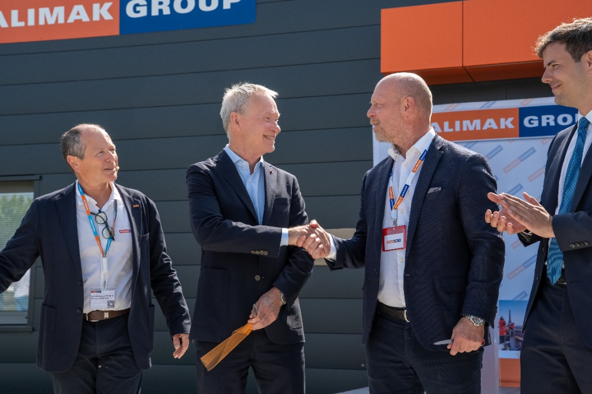
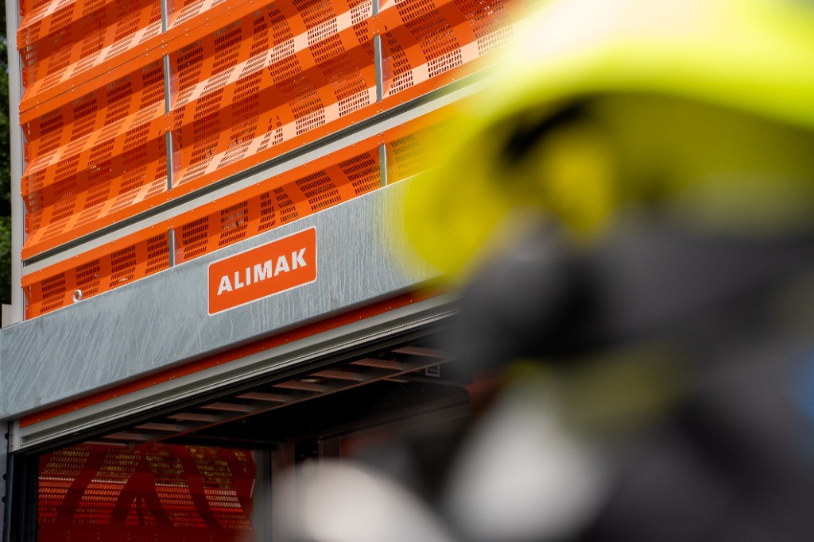
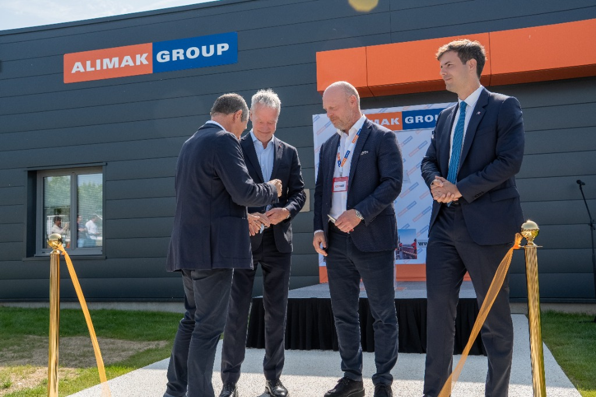
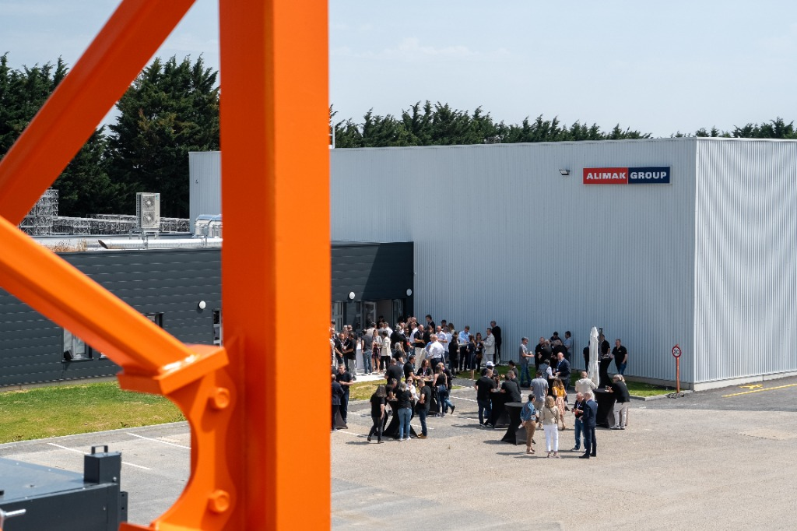
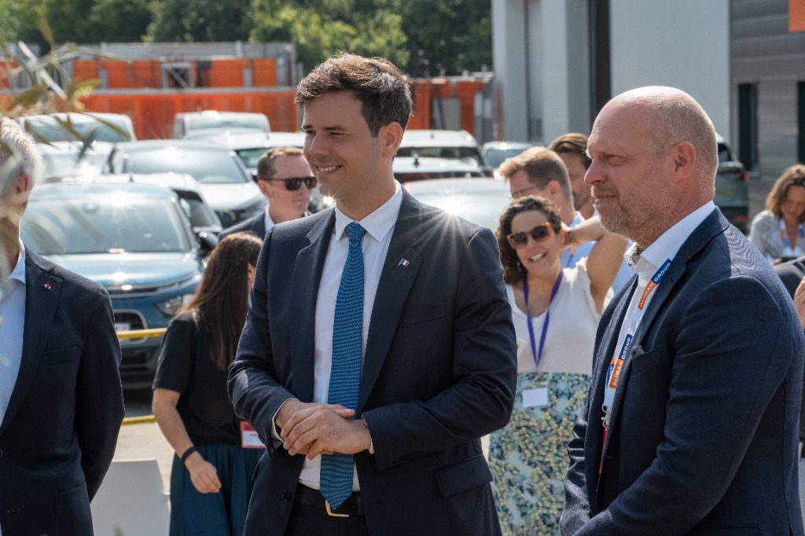
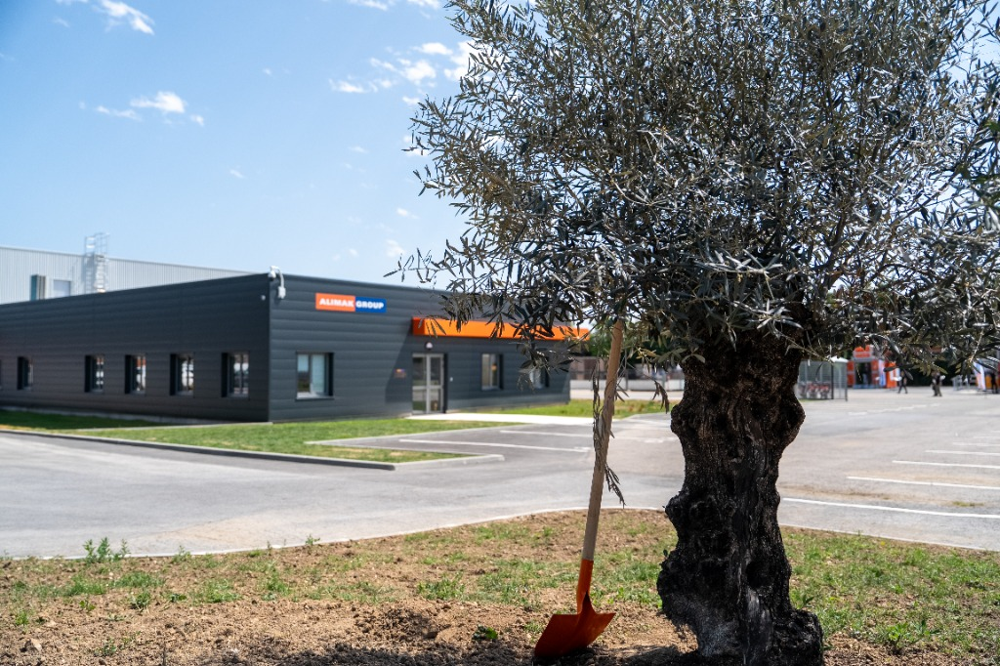
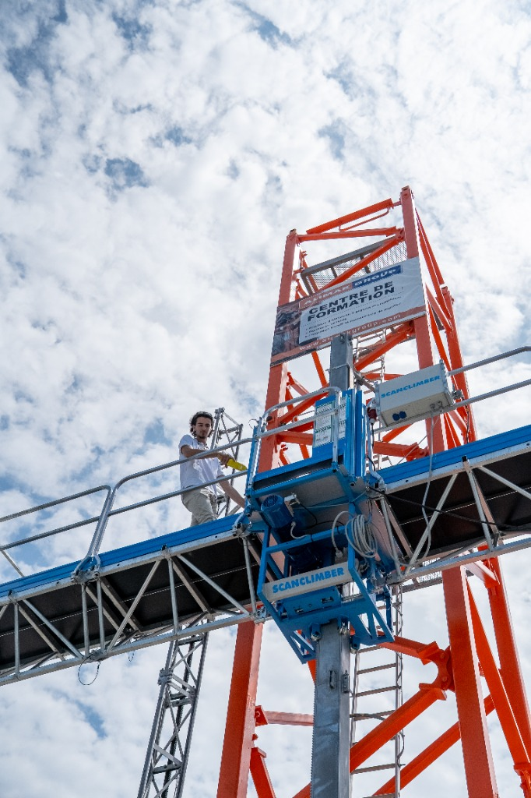
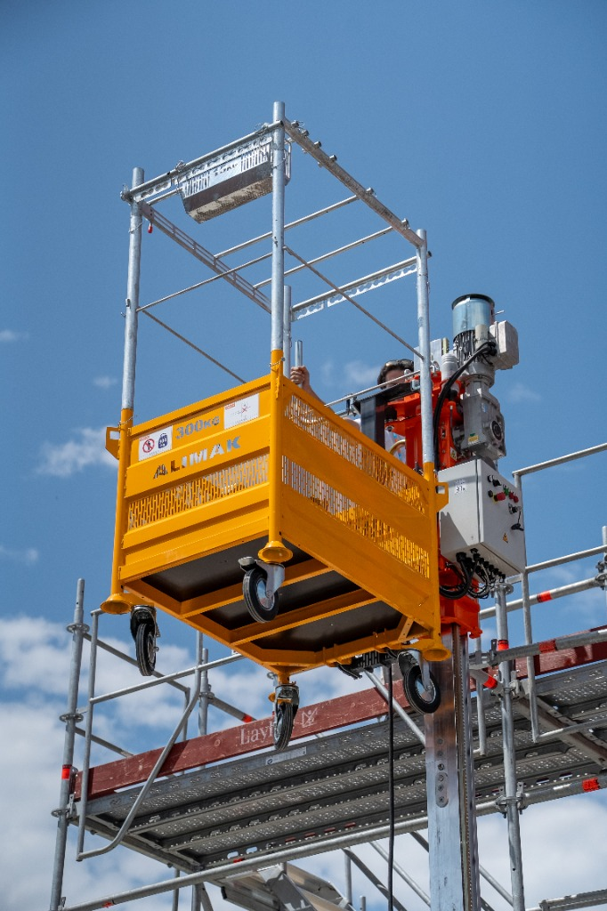
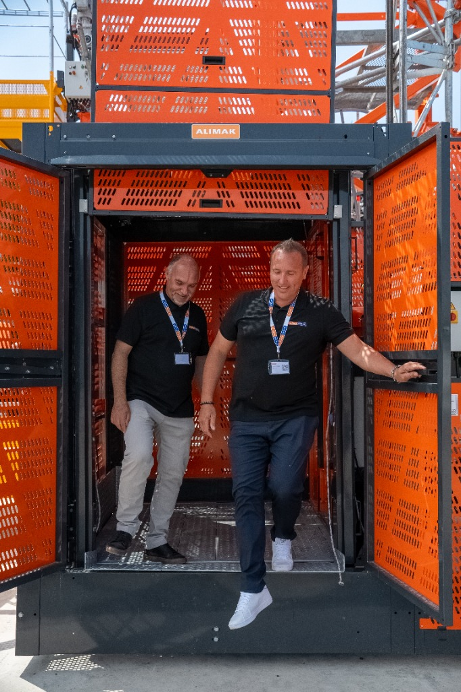
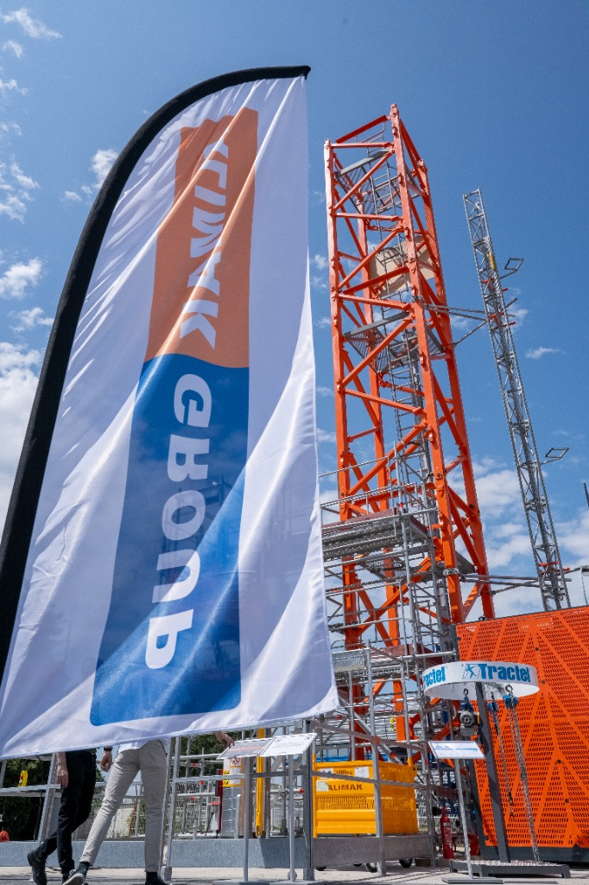

Événementiel · Groupe Alimak
Inauguration du nouveau centre de formation : valoriser l'expertise et fédérer les équipes
Faire rayonner l'inauguration officielle du nouveau centre de formation du Groupe Alimak auprès des clients, partenaires et filiales en France et à l'international.
- Client
- Groupe Alimak
- Secteur
- Industrie & solutions d'accès vertical
- Livrables
- Film événementiel + reportage photo complet (10+ visuels HD)
- Année · Durée
- 2025 · Tournage 1 jour · Livraison rapide
Résultats obtenus
- +42%d'engagement sur LinkedIn & réseaux
- 100%des temps forts couverts (vidéo + photo)
- x3de visibilité pour le centre de formation
- 10+visuels HD livrés pour la presse et le groupe
01 — Contexte
Le contexte & les enjeux
Pour accompagner la montée en compétences de ses équipes et de ses clients sur ses solutions d'accès vertical (Alimak, Tractel, Scanclimber), le Groupe Alimak inaugurait son tout nouveau centre de formation. L'événement réunissait la direction internationale, les équipes techniques, les partenaires et des représentants institutionnels autour de démonstrations en conditions réelles.
02 — Attentes
Ce que le client attendait
- Immortaliser les temps forts institutionnels (coupure du ruban, prises de parole, plantation symbolique de l'olivier)
- Mettre en valeur les infrastructures techniques et les démonstrations en hauteur sur les mâts et plateformes
- Traduire la convivialité et la fierté des équipes réunies pour l'ouverture du site
- Fournir un film dynamique et une banque d'images complète réutilisables en communication interne et externe
03 — Contraintes
Les contraintes du projet
- Événement en direct sur une seule journée : aucune seconde prise possible sur les gestes inauguraux
- Tournage en extérieur sous fort ensoleillement et captation d'installations de grande hauteur
- Double exigence : couvrir à la fois le protocole officiel et la technicité industrielle des équipements
- Respect strict des règles de sécurité sur les zones de démonstration
04 — Propositions
Les pistes que nous avons proposées
-
Le reportage purement institutionnel
Un film centré sur les discours officiels et la cérémonie protocolaire d'inauguration.
-
L'alliance de l'humain et de la hauteur technique Piste retenue
Croiser l'émotion des temps forts officiels (ruban, plantation, échanges) avec des plans spectaculaires des structures d'accès vertical en action pour montrer concrètement la vocation du centre.
-
Le focus 100 % démonstration technique
Une vidéo orientée uniquement sur les équipements et les parcours de formation pratique.
05 — Solution
La solution retenue
Nous avons retenu la piste mêlant dimension humaine et démonstration industrielle. Tout au long de la journée, nous avons alterné la captation sur le vif des moments symboliques (coupure du ruban, plantation de l'olivier, poignées de main, visites) et la mise en valeur esthétique des tours, ascenseurs de chantier et plateformes d'accès vertical. Le film final et le reportage photo donnent immédiatement envie aux clients et collaborateurs de venir se former sur place.
06 — Production
Tournage & montage
Tournage
Captation vidéo et photo sur une journée complète avec caméras et optiques professionnelles, prises de vues au sol et en contre-plongée sur les structures.
Montage
Montage rythmé mêlant temps forts officiels, démonstrations techniques et ambiance conviviale, avec étalonnage soigné aux couleurs d'Alimak Group.
Équipe
Équipe agile vidéo & photographie dédiée sur toute la durée de l'inauguration.
07 — Résultat
Le résultat









FrameOn a su capter à la fois la dimension officielle de cette inauguration et la réalité technique de notre nouveau centre de formation. Le film et les photos valorisent parfaitement notre savoir-faire auprès de tout le groupe.

Et si le prochain cas client, c'était le vôtre ?
Parlez-nous de vos enjeux. Nous revenons vers vous avec des idées concrètes, pas avec un devis générique.